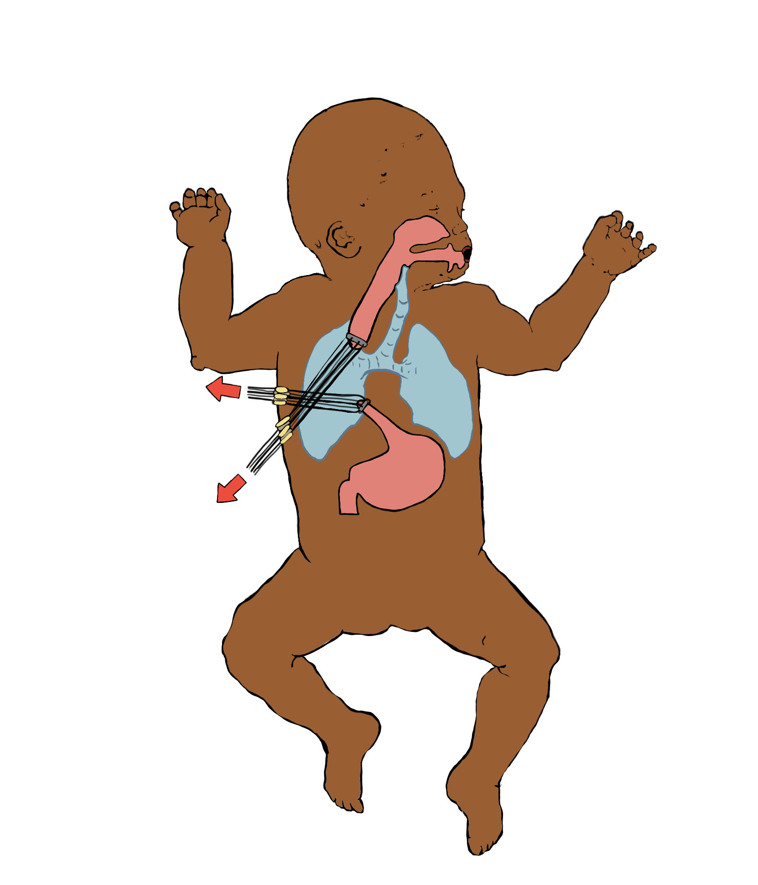
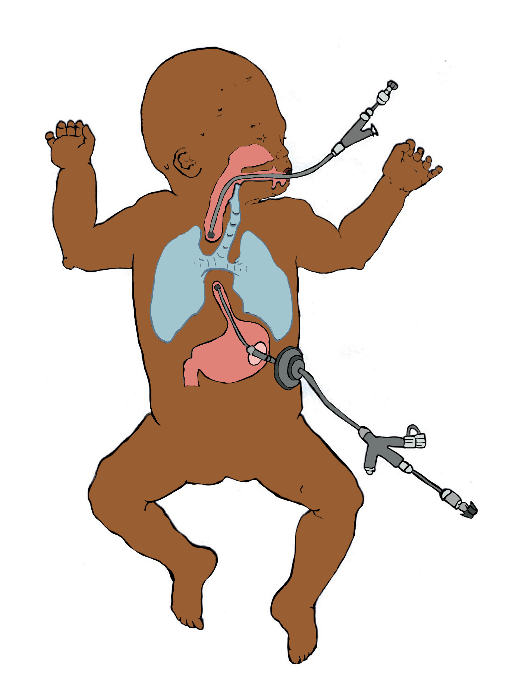
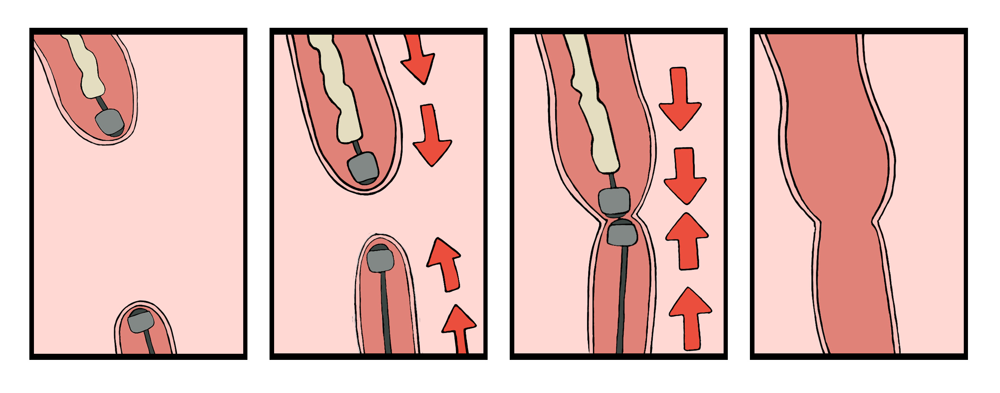

Recent Advances in the Management of Esophageal Atresia and Tracheoesophageal Fistula: A Review
Illustration for Columbia New York Presbyterian Hospital for the Journal of Pediatric Gastroenterology & Nutrition, soon to be published. I created illustrations of treatment procedures for infants born with birth defects esophageal atresia and tracheoesophageal fistula.Illustrations can be seen on pages 30 -31 of the journal.
Adobe Photoshop and Illustrator.
Firgure 1
Esophageal lengthening procedure illustrating external traction sutures in long gap esophageal atresia (LGEA)
Firgure 2 A
Esophageal lengthening procedure via endoluminal magnets.
A: Placement of endoluminal magnets in proximal and distal esophageal pouches.
Firgure 2 B
Esophageal lengthening procedure via endoluminal magnets.
B: Endoluminal magnets apply continuous traction, bringing the ends of the esophagus into opposition and creating an anastomosis as demonstrated in these four panels.